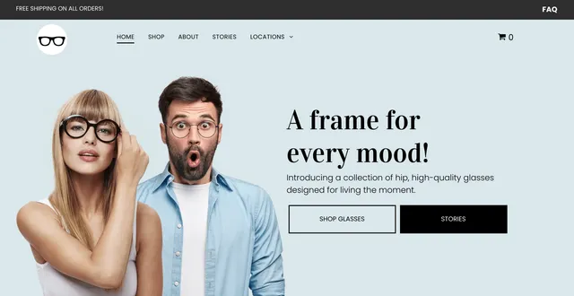
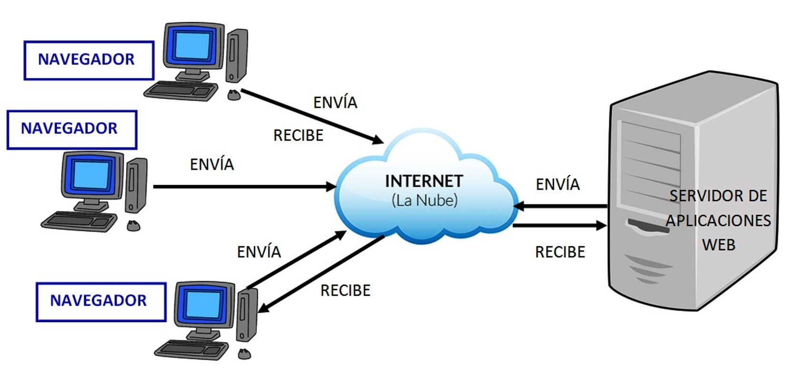
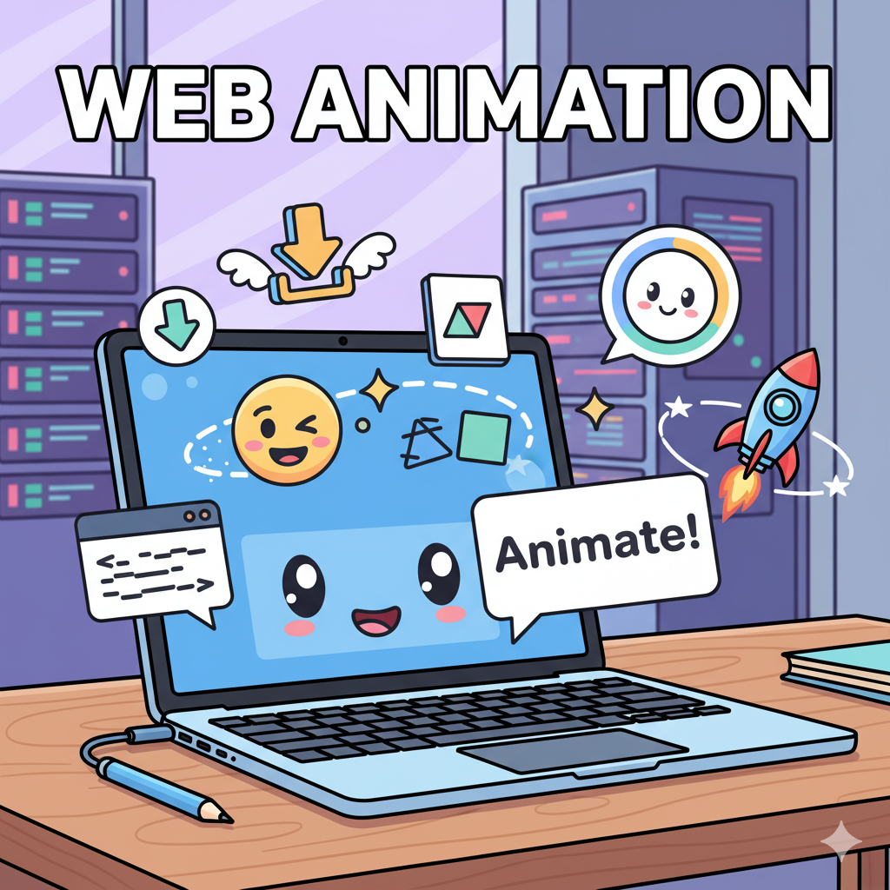

¡Explora el Universo de Internet!
Cada día, navegas por la web: visitas tus páginas favoritas, ves vídeos, buscas información. Pero, ¿alguna vez te has preguntado cómo funciona todo esto? ¿Cómo llegan esas páginas a tu pantalla?
En esta unidad, vamos a desvelar los secretos de la web. Aprenderemos qué son las páginas web, dónde se guardan, cómo se crean y cómo se les puede dar vida con animaciones. ¡Prepárate para entender el mundo que está detrás de cada clic!
- - ¡El mundo en la punta de tus dedos!
1. Introducción a las Páginas Web
Una página web es un documento digital que se puede ver en un navegador de Internet (como Chrome, Firefox o Edge). Es como una página de un libro, pero interactiva y conectada a millones de otras páginas.
Las páginas web pueden contener texto, imágenes, vídeos, sonidos y enlaces a otras páginas web. Cuando haces clic en un enlace, te "navegas" a otra página. El conjunto de todas las páginas web interconectadas forma la World Wide Web (WWW).
¿Cómo se accede a una página web?
- Escribiendo su dirección URL (Uniform Resource Locator) en el navegador, por ejemplo: `https://www.google.com`.
- Haciendo clic en un enlace (hipervínculo) en otra página.

- - ¡Así se ve una página web!
¡Actividad Práctica! Abre tu navegador y busca una página web sobre tu videojuego favorito. Identifica su URL y al menos 3 enlaces que te lleven a otras partes de la página o a otras webs.
2. Introducción a los Servidores Web: Los "Almacenes" de Internet
Cuando escribes una dirección web o haces clic en un enlace, ¿de dónde viene la página? Viene de un servidor web.
Un servidor web es un ordenador muy potente que está siempre encendido y conectado a Internet. Su trabajo es almacenar las páginas web y enviarlas a tu navegador cuando las pides. Es como una biblioteca gigante que te entrega el libro que pides al instante.
¿Cómo funciona?
- Tu navegador envía una petición al servidor web.
- El servidor web encuentra la página que pides.
- El servidor web envía la página de vuelta a tu navegador.
- Tu navegador muestra la página en tu pantalla.

- - El servidor web te entrega las páginas.
¡Actividad Práctica! Cuando visitas una página web, ¿crees que el servidor web está cerca de ti o puede estar en cualquier parte del mundo? ¿Por qué?
3. Lenguajes para la Edición de Páginas Web: ¡Construyendo tu Propia Web!
Las páginas web no aparecen de la nada. Se construyen utilizando diferentes lenguajes de programación. Los más básicos y esenciales son:
- HTML (HyperText Markup Language): Es el "esqueleto" o la estructura de la página web. Define el contenido (títulos, párrafos, imágenes, enlaces).
<h1>Mi Primera Página Web</h1> <p>¡Hola mundo! Esta es mi página.</p> <img src="mi_imagen.jpg" alt="Mi imagen"> - CSS (Cascading Style Sheets): Es la "ropa" o el "diseño" de la página web. Define cómo se ve el contenido (colores, fuentes, tamaños, disposición).
h1 { color: blue; font-family: Arial; } p { font-size: 16px; } - JavaScript (JS): Es el "cerebro" o la interactividad de la página web. Permite que la página haga cosas dinámicas (botones que reaccionan, animaciones complejas, juegos).
Con HTML y CSS, puedes crear páginas web estáticas muy bonitas. Con JavaScript, puedes hacer que cobren vida.

- - Los pilares de la web.
¡Actividad Práctica! Abre un editor de texto simple (como el Bloc de Notas) y escribe un pequeño código HTML para un título y un párrafo. Guarda el archivo como `mi_pagina.html` y ábrelo con tu navegador. ¡Verás tu primera web!
4. Introducción a la Animación Web: ¡Dale Vida a tus Páginas!
La animación web hace que las páginas sean más atractivas y dinámicas. Puedes hacer que los elementos se muevan, cambien de color, aparezcan o desaparezcan suavemente.
Tipos de animación web sencilla:
- Transiciones CSS: Permiten cambios suaves de una propiedad a otra (ej. un botón que cambia de color al pasar el ratón por encima).
- Animaciones CSS: Permiten crear secuencias de movimiento más complejas (ej. un elemento que rebota o gira).
- Animaciones con JavaScript: Para interacciones más avanzadas y juegos dentro de la web.
La animación hace que la experiencia del usuario sea más divertida y atractiva.

- - ¡Haz que tu web se mueva!
¡Actividad Práctica! En tu archivo `mi_pagina.html`, añade un estilo CSS para cambiar el color de tu título a rojo. Luego, investiga cómo hacer que el color cambie suavemente al pasar el ratón por encima (transición CSS).
Proyecto Final de Unidad: "Mi Primera Página Web Personal"
Para este proyecto final, vas a crear tu propia página web personal utilizando HTML y CSS. En ella, podrás presentarte, hablar de tus intereses, tus videojuegos favoritos o tus proyectos de robótica.
Requisitos del Proyecto:
- 1. Estructura HTML:
- Un título principal (h1) con tu nombre.
- Al menos dos secciones diferentes (ej. "Sobre mí", "Mis Hobbies", "Mis Proyectos").
- Texto en párrafos (p).
- Al menos una imagen.
- Al menos un enlace a otra página (puede ser una página web real o una segunda página tuya).
- 2. Estilos CSS:
- Cambia el color de fondo de la página o de alguna sección.
- Cambia el color y/o el tipo de letra de los títulos y/o párrafos.
- Aplica algún estilo a las imágenes (ej. bordes redondeados).
- 3. Animación Sencilla (Opcional pero recomendado):
- Añade una pequeña animación o transición CSS a algún elemento (ej. un botón, un texto, una imagen).
- 4. Reflexión y Presentación:
- Explica cómo has estructurado tu página con HTML.
- Describe cómo has aplicado estilos con CSS.
- Comenta cómo has asegurado que la página sea "segura, responsable y respetuosa" (ej. no compartiendo información sensible, usando imágenes con permiso).
- Menciona cualquier problema que hayas encontrado y cómo lo has resuelto.
Criterios trabajados:
- 5.1. Conocer la construcción de aplicaciones informáticas y web, entendiendo su funcionamiento interno, de forma segura, responsable y respetuosa.
- 5.2. Conocer y resolver la variedad de problemas potencialmente presentes en el desarrollo de una aplicación web, tratando de generalizar posibles soluciones.
Cuestionario: ¡Demuestra lo que sabes de la Web!
Responde a las siguientes preguntas para comprobar lo que has aprendido en esta unidad.